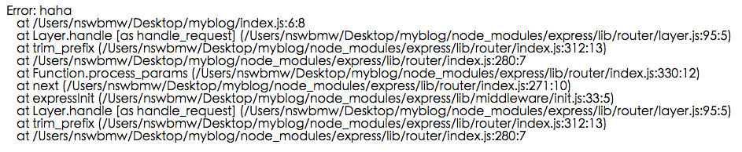

前面我们讲解了 express 中路由和模板引擎 ejs 的用法，但 express 的精髓并不在此，在于中间件的设计理念。
3.4.1 中间件与 next
express 中的中间件（middleware）就是用来处理请求的，当一个中间件处理完，可以通过调用 next() 传递给下一个中间件，如果没有调用 next()，则请求不会往下传递，如内置的 res.render 其实就是渲染完 html 直接返回给客户端，没有调用 next()，从而没有传递给下一个中间件。看个小例子，修改 index.js 如下：
index.js
var express = require('express');
var app = express();
app.use(function(req, res, next) {
console.log('1');
next();
});
app.use(function(req, res, next) {
console.log('2');
res.status(200).end();
});
app.listen(3000);
此时访问 localhost:3000，终端会输出：
1
2
通过 app.use 加载中间件，在中间件中通过 next 将请求传递到下一个中间件，next 可接受一个参数接收错误信息，如果使用了 next(error)，则会返回错误而不会传递到下一个中间件，修改 index.js 如下：
index.js
var express = require('express');
var app = express();
app.use(function(req, res, next) {
console.log('1');
next(new Error('haha'));
});
app.use(function(req, res, next) {
console.log('2');
res.status(200).end();
});
app.listen(3000);
此时访问 localhost:3000，终端会输出错误信息：

浏览器会显示：

小提示：
app.use有非常灵活的使用方式，详情见 官方文档。
express 有成百上千的第三方中间件，在开发过程中我们首先应该去 npm 上寻找是否有类似实现的中间件，尽量避免造轮子，节省开发时间。下面给出几个常用的搜索 npm 模块的网站：
小提示：express@4 之前的版本基于 connect 这个模块实现的中间件的架构，express@4 及以上的版本则移除了对 connect 的依赖自己实现了，理论上基于 connect 的中间件（通常以
connect-开头，如connect-mongo）仍可结合 express 使用。注意：中间件的加载顺序很重要！比如：通常把日志中间件放到比较靠前的位置，后面将会介绍的
connect-flash中间件是基于 session 的，所以需要在express-session后加载。
3.4.2 错误处理
上面的例子中，应用程序为我们自动返回了错误栈信息（express 内置了一个默认的错误处理器），假如我们想手动控制返回的错误内容，则需要加载一个自定义错误处理的中间件，修改 index.js 如下：
index.js
var express = require('express');
var app = express();
app.use(function(req, res, next) {
console.log('1');
next(new Error('haha'));
});
app.use(function(req, res, next) {
console.log('2');
res.status(200).end();
});
//错误处理
app.use(function(err, req, res, next) {
console.error(err.stack);
res.status(500).send('Something broke!');
});
app.listen(3000);
此时访问 localhost:3000，浏览器会显示 Something broke!。
小提示：关于 express 的错误处理，详情见 官方文档。
上一节：3.3 模板引擎
下一节：4.1 开发环境